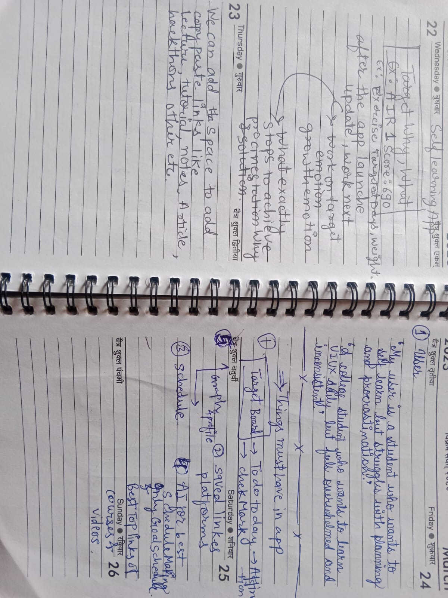
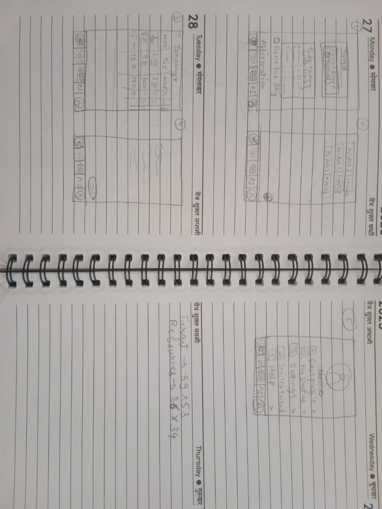
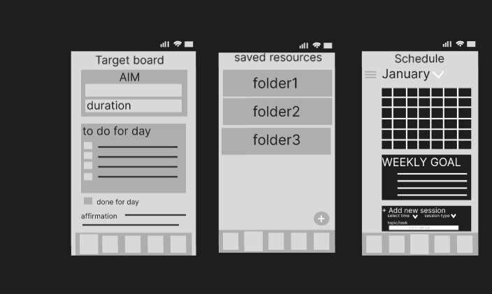
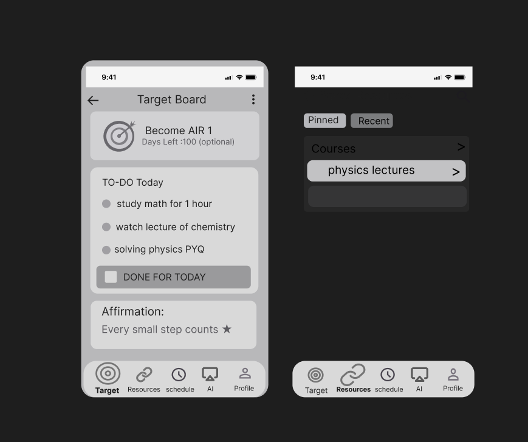
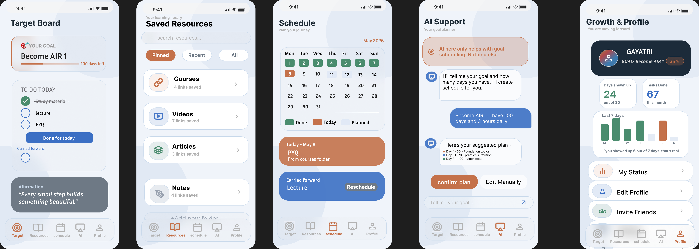

The Strategic Perspective
"I designed it because I was also that user — someone who wanted to learn consistently but kept failing not because of laziness but because of how the apps made me feel. Guilty for missing a day. Overwhelmed by too many options. Lost without a clear plan. So I designed this app around one question — what does a user need to feel today to come back tomorrow?"
Discovery & Target User Definition
Our user segment targets anyone striving toward personal milestone advancement who feels continuously bottlenecked by digital overstimulation. They lack a structural interface ecosystem calm enough to use without continuous performance pressure.


Mapping User Friction to Product Mechanics
| Identified Emotional Friction | System Architectural Feature |
|---|---|
| Too many distractions | Target Board: One core goal visible always, nothing else competing. |
| No focus parameters | To Do Today: Only today's tasks shown, isolating tracking vectors. |
| Guilty for missing a day | Judgment-Free Engine: Missed tasks carry forward without punishment mechanisms. |
| No clear milestone path | Schedule Layout: Step-by-step custom calendar mapping. |
| Cognitive clarity hurdles | Restricted AI: Handles goal scheduling exclusively to limit decision overhead. |
| Invisible tracking vacuum | Growth Graph: Encouraging data viz rendering past success cleanly. |
| Resource access decay | Saved Resources: One-tap clean structural directory links in folders. |
Information Architecture & Digital Wireframes


Interactive Slide Directory: Each Screen Story

The Target Board
Screen 1 is the Target Board. This is the home screen. It shows your goal, today's tasks, and an affirmation. I designed the affirmation to work two ways — if you read it before starting it gives you motivation, if you read it after finishing it feels like a reward. Same words. Two different feelings. That was a deliberate decision.

Saved Resources
Screen 2 is Saved Resources. This exists because users already know what they want to learn but when it's actually time to study they can't find that one link or video. By the time they find it the mood is gone. This screen solves that — save everything in folders, open when ready, no searching, no distraction.

The Schedule
Screen 3 is the Schedule. This is actually the engine of the entire app. Whatever you plan here automatically shows up on your home screen the next morning. You don't update it manually. And if you miss a task it doesn't punish you — it just carries it forward and lets you reschedule without judgment. That one feature removes the biggest reason people quit.

AI Support
Screen 4 is AI Support. But not the way most apps use AI. The AI here does one thing only — it helps you create a goal schedule. Nothing else. No general chat. No life advice. I restricted it on purpose because the app's whole promise is focus. An unlimited AI would break that promise completely. The boundary is the feature.

Growth and Profile
Screen 5 is Growth and Profile. This screen exists because of one specific feeling — when you're working toward a long goal there comes a point where you feel like you've done nothing. That feeling is not laziness. It's a perception problem. The progress is real but invisible. This screen makes it visible. It shows how much you've already done — not how much is left. Encouraging not pressuring.

The Color Logic
The color system also has logic. Coral is for goals and identity. Blue is for actions and pending tasks. Green is for completion. Dark navy is for affirmation and emphasis. Nothing is colored randomly. Every color has one job.
Project Learnings
The biggest thing I learned while building this — the app I designed to fight procrastination actually fought my own procrastination while I was building it. That told me it works.
And another important thing is thanks to Claude AI, Google Gemini, and ChatGPT who helped me in this project.